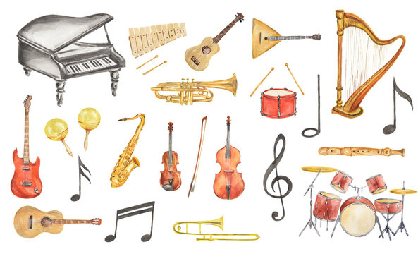
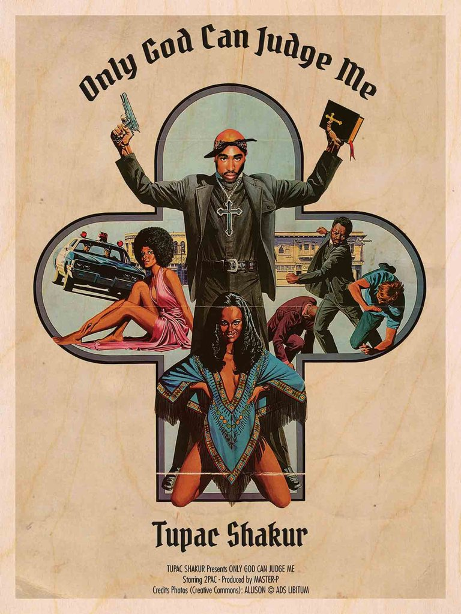

Driving, intense, energetic, and almost always loud, rock music was the most popular form of music for decades before hip-hop went mainstream. Dominating the airwaves for nearly 50 years, rock spawned dozens of sub-genres – everything from intricate, lyrical folk-rock to the most brutal forms of extreme death metal. It’s played in small bars and sold-out arenas, garages and concert halls, and has made its mark all over the world.
Because its subgenres are so diverse, rock is defined more by its overall aesthetic than any specific musical features (though, as we’ll explore in the next section, nearly all subgenres use electric guitars). Rock is about electrifying energy, especially the youthful, rebellious energy of its founders. Over the years, generations of musicians have found their own ways of capturing that energy, but the same spirit inspires them all.

Classical music is a very general term which normally refers to the standard music of countries in the western world. It is music that has been composed by musicians who are trained in the art of writing music (composing) and written down in music notation so that other musicians can play it. Classical music may also be described as "art music" though it was not good in classical period that term also Includes types of serious modern music which are not classical. Classical music differs from pop music because it is not made just in order to be popular for time or just to be a commercial success. It is different from folk music which is generally made up by ordinary members of society and learned by future generations by listening, dancing and copying.

Hip hop music or hip-hop music, also known as rap music,[ is a genre of popular music developed in the United States by inner-city African Americans, Latino Americans and Caribbean Americans in the Bronx borough of New York City in the 1970s. It consists of a stylized rhythmic music that commonly accompanies rapping, a rhythmic and rhyming speech that is chanted. It developed as part of hip hop culture, a subculture defined by four key stylistic elements: MCing/rapping, DJing/scratching with turntables, break dancing, and graffiti writing. Other elements include sampling beats or bass lines from records (or synthesized beats and sounds), and rhythmic beatboxing. While often used to refer solely to rapping, "hip hop" more properly denotes the practice of the entire subculture. The term hip hop music is sometimes used synonymously with the term rap music, though rapping is not a required component of hip hop music; the genre may also incorporate other elements of hip hop culture, including DJing, turntablism, scratching, beatboxing, and instrumental tracks.

Pop music is the genre of popular music that produces the most hits. A hit is a song that sells many copies, and the latest hits are listed every week on the charts. To get on the charts, a song must be released as a single, although most singles are also released on an album. Songs that become hits almost always share certain features that are sometimes called the pop-music formula. They have a good rhythm, a catchy melody, and are easy to remember and sing along to. They usually have a chorus that's repeated several times and two or more verses. Most pop songs are between two and five minutes long, and the lyrics are usually about the joys and problems of love and relationships. Pop songs are produced by groups like the boy band One Direction and the girl group Girls' Generation, and by pop singers like Justin Bieber and Madonna.